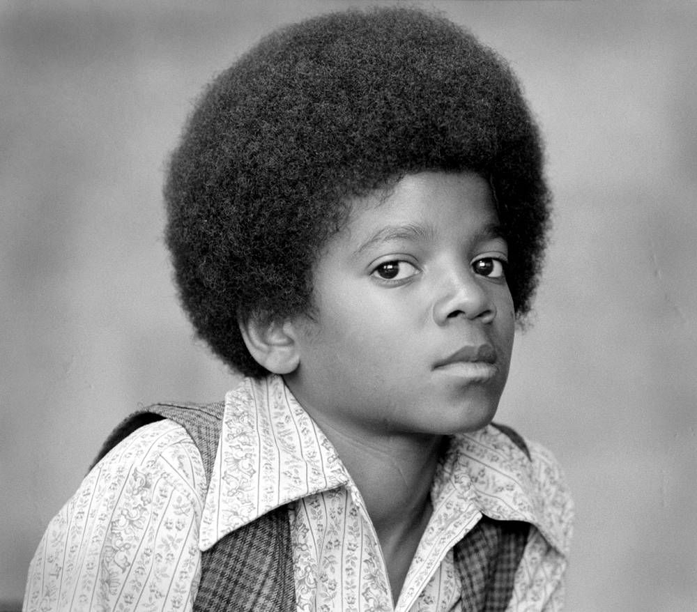

Historia de Michael Jackson
Michael Joseph Jackson ONM (29 de agosto de 1958-25 de junio de 2009) fue un cantante, compositor y bailarín estadounidense. Apodado el "Rey del Pop", se le considera una de las figuras culturales más importantes del siglo XX. A lo largo de una carrera de cuatro décadas, sus contribuciones a la música, la danza y la moda, junto con su publicitada vida personal, lo convirtieron en una figura mundial en la cultura popular. Jackson influyó en artistas de muchos géneros musicales y, a través de representaciones teatrales y de video, popularizó movimientos de baile complicados como el moonwalk, al que dio el nombre, y el robot. Es el artista musical más premiado de la historia. El octavo hijo de la familia Jackson, Jackson hizo su debut profesional en 1964 con sus hermanos mayores Jackie, Tito, Jermaine y Marlon como miembro de los Jackson 5 (más tarde conocidos como los Jackson). Jackson comenzó su carrera en solitario en 1971 mientras estaba en Motown Records, y se convirtió en una estrella en solitario con su álbum de 1979 Off the Wall. A sus videos musicales, incluidos los de "Beat It", "Billie Jean" y "Thriller" de su álbum de 1982 Thriller, se les atribuye haber roto las barreras raciales y transformar el medio en una forma de arte y una herramienta promocional. Ayudó a impulsar el éxito de MTV y continuó innovando con videos para los álbumes Bad (1987), Dangerous (1991) e HIStory: Past, Present and Future, Book I (1995). Thriller se convirtió en el álbum más vendido de todos los tiempos, mientras que Bad fue el primer álbum en producir cinco sencillos número uno en el Billboard Hot 100 de EE. UU. [Nb 1]. Desde finales de la década de 1980, Jackson se convirtió en una figura de controversia y especulación debido a sus cambios de apariencia, relaciones, comportamiento y estilo de vida. En 1993, fue acusado de abusar sexualmente del hijo de un amigo de la familia. La demanda se resolvió fuera de un tribunal civil y Jackson no fue acusado formalmente por falta de pruebas. En 2005, fue juzgado y absuelto de más acusaciones de abuso sexual infantil y varios otros cargos. En ambos casos, el FBI no encontró evidencia de conducta criminal en nombre de Jackson en ninguno de los dos casos. En 2009, mientras se preparaba para una serie de conciertos de regreso, This Is It, Jackson murió de una sobredosis de propofol administrada por su médico personal, Conrad Murray, quien posteriormente fue condenado por homicidio involuntario.
Jackson es uno de los artistas musicales más vendidos de todos los tiempos, con ventas estimadas de más de 400 millones de discos en todo el mundo. [Nb 2] Tuvo 13 sencillos número uno en Billboard Hot 100 (más que cualquier otro artista masculino en la era Hot 100 ) y fue el primer artista en tener un sencillo entre los diez primeros en el Billboard Hot 100 en cinco décadas diferentes. Sus honores incluyen 15 premios Grammy, seis premios Brit, un Globo de Oro y 39 récords mundiales Guinness, incluido el "Artista más exitoso de todos los tiempos". Las incorporaciones de Jackson incluyen el Salón de la Fama del Rock and Roll (dos veces), el Salón de la Fama del Grupo Vocal, el Salón de la Fama de los Compositores, el Salón de la Fama de la Danza (el único artista de grabación en ser incluido) y el Salón de la Música de Rhythm and Blues de Fama. En 2016, su patrimonio ganó $ 825 millones, la cantidad anual más alta para una celebridad jamás registrada por Forbes.

Desde finales de la década de 1980, Jackson se convirtió en una figura de controversia y especulación debido a sus cambios de apariencia, relaciones, comportamiento y estilo de vida. En 1993, fue acusado de abusar sexualmente del hijo de un amigo de la familia. La demanda se resolvió fuera de un tribunal civil y Jackson no fue acusado formalmente por falta de pruebas. En 2005, fue juzgado y absuelto de más acusaciones de abuso sexual infantil y varios otros cargos. En ambos casos, el FBI no encontró evidencia de conducta criminal en nombre de Jackson en ninguno de los dos casos. En 2009, mientras se preparaba para una serie de conciertos de regreso, This Is It, Jackson murió de una sobredosis de propofol administrada por su médico personal, Conrad Murray, quien posteriormente fue condenado por homicidio involuntario.